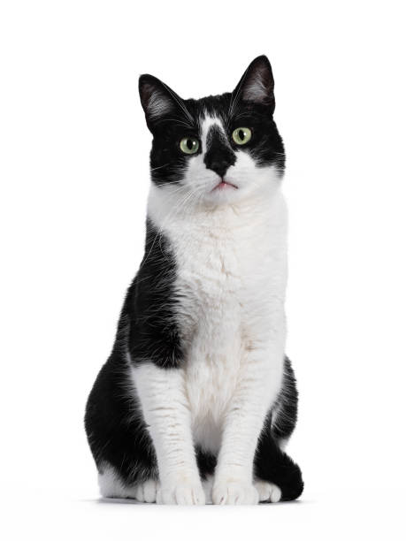

Kot domowy
Kot domowy – udomowiony gatunek ssaka z rzędu drapieżnych z rodziny kotowatych. Koty zostały udomowione około 9500 lat temu i są obecnie najpopularniejszymi zwierzętami domowymi na świecie. Gatunek ten prawdopodobnie pochodzi od kota nubijskiego, przy czym w Europie krzyżował się ze żbikiem. Przez IUCN/SSC jest uznawany za gatunek inwazyjny.
do anatomii kota
Historia:
Przodkiem kota domowego jest kot nubijski – według poglądów większości współczesnych naukowców różnice pomiędzy kotem domowym i nubijskim są tak niewielkie, że należą one do tego samego gatunku. Istnieją rozbieżności w kwestii daty udomowienia kota. Większość źródeł sugeruje lata 4000–3700 p.n.e., a miejscem, w którym miało do tego dojść, była Nubia. Istnieją jednak dowody (grób mężczyzny z kotem z Cypru sprzed ok. 7500 r. p.n.e.), że domestykacja kota zaczęła się znacznie wcześniej (około 9500 lat temu) i trwała kilka tysięcy lat, a jej miejscem był obszar Żyznego Półksiężyca w Azji Zachodniej. Już ok. 2000 r. p.n.e. kot był pospolicie hodowany w starożytnym Egipcie, gdzie był zwierzęciem świętym, utożsamianym z boginią Bastet, a zwłoki kotów mumifikowano. Również Germanie kojarzyli go ze swoją boginią płodności Freją, która jeździła powozem zaprzężonym w te zwierzęta. Później zaczęto wykorzystywać go do tępienia gryzoni. Od momentu swego udomowienia kot stał się bohaterem licznych baśni i mitów. Wyhodowano wiele ras kota domowego, różniących się ubarwieniem, wielkością i długością włosów; współczesne wzorce niektórych starszych ras znacznie odbiegają od ich wcześniejszych cech (jak w przypadku kotów perskich czy syjamskich).
Wiek kota:
Koty żyjące w środowisku naturalnym dożywają średnio do 8 lat, natomiast koty trzymane w domu osiągają wiek około 14-17 lat. Na długość życia wpływa szereg czynników, takich jak: płeć, styl życia czy zwyczaje, jak i również kwestia sterylizacji lub kastracji. Najdłużej żyjącym kotem według Księgi rekordów Guinnessa była kotka imieniem Creme Puff z Teksasu (1967–2005), która przeżyła 38 lat i 3 dni. Małe kocięta rozwijają się szybko. Stają się w pełni samodzielne w wieku od 8 do 12 tygodni i wtedy mogą trafić do nowych właścicieli. Gdy mają około 3 miesięcy, kotka przestaje się nimi interesować i zmusza je do samodzielności. W wieku około 5 miesięcy kocięta wymieniają zęby na stałe. Dzieciństwo kończy się wraz z uzyskaniem dojrzałości płciowej. W tym okresie może pojawić się pierwsza ruja, a kot zaczyna oznaczać swoje terytorium. Wyraźne objawy starości pojawiają się zwykle po 7. roku życia: coraz częściej pojawia się kamień nazębny, słabnie wzrok, słuch i węch, stają się powolne oraz słabe. Stare koty są bardzo wrażliwe na zmiany środowiskowe i stres.
Zachowanie, pielęgnacja i opieka nad kotem:
Badania prowadzone przez naukowców z University of Illinois at Urbana-Champaign z użyciem nadajników radiowych pozwoliły stwierdzić, jak koty mieszkające z ludźmi i zdziczałe zachowują się w terenie.
Stwierdzono, że:
| cecha | kot mieszkający z ludźmi | kot zdziczały |
|---|---|---|
| część czasu poświęcona na odpoczynek | 80% | 62% |
| część czasu poświęcona na higienę | 17% | 24% |
| część czasu poświęcona na polowanie | 3% | 14% |
| obszar wędrówek | 0,3km² | 5,5km² |
| liczba badanych osobników | 18 | 24 |
Anatomia kota:
Choć istnieje wiele różnych ras i rodzajów kotów, organizm każdego z nich funkcjonuje mniej więcej ten sam sposób. Koty przypominają budową ciała inne drapieżniki obdarzone szybkim refleksem i smukłą sylwetką. Dzięki temu mogą łatwo wymknąć się bardziej niebezpiecznym zwierzętom lub złapać zdobycz podczas polowania. Jeśli chcesz zrozumieć zachowanie i potrzeby swojego kota, zapoznaj się z jego anatomią (budową) i fizjologią (sposobem funkcjonowania).
Budowa kota:
Budowa kota, podobnie jak innych kręgowców, oparta jest na wewnętrznym szkielecie. W przypadku tego gatunku liczy on 244 kości. Te dzielą się na kilka części: Czaszkę, kręgosłup, klatkę piersiową, kończyny przednie, kończyny tylnie